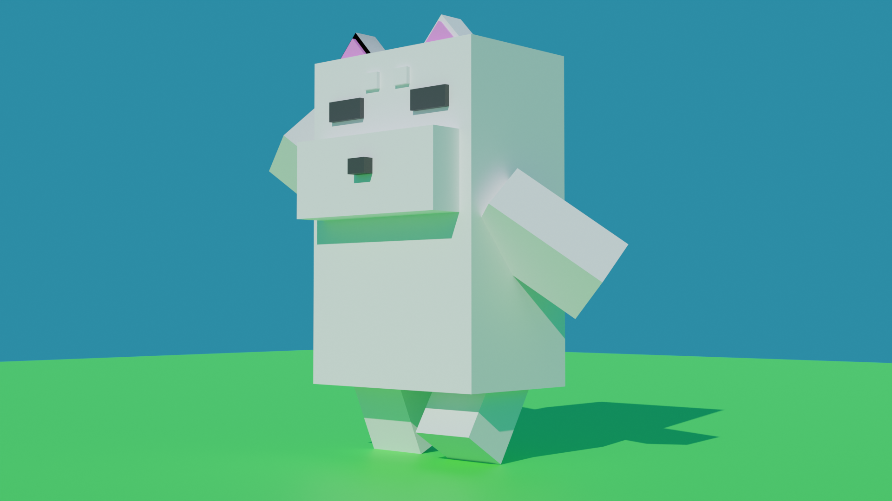

Works
弊サイトの使用言語:HTML(Bootstrap5,FontAwesome),CSS,JavaScript(Jquery v3.6.1)
参画したプロジェクト
某キャリア法人営業向け支援システム保守開発
- 使用言語・FW・DB
Java8,内製フレームワーク(Spring),OracleDB
- 概要
通信キャリアの直営店や量販店などの営業が法人と携帯電話の契約を結ぶ際に、営業が入力した顧客情報を元にして申込書の発行や契約情報の登録、出荷依頼を行うシステムの新規機能開発・既存機能の改修を行うプロジェクト
大学向けポータルサイトパッケージソフトの品質改善
- 使用言語・FW・DB
Java,JavaScript,内製フレームワーク(PrimeFaces,XHTML),PostgreSQL
- 概要
大学の職員や教員、学生が使用するポータルサイトの障害対応を行ってソフトウェアの品質改善を行うプロジェクト
Github
学習した言語の成果物をGithubにて管理。JavaのCLIブラックジャックゲームやknockout.jsの学習で書いたソースを配置。
Zenn
未経験エンジニアの心構えに関する記事を投稿。現在JSTQBのシラバスを要点を整理してまとめた記事を執筆中。
時間当てゲーム
N予備校の教材を参考に制作。20秒ピッタリに止めることを目指すゲーム。
使用言語:HTML,CSS,JavaScript
西暦→和暦変換
西暦1926年～2030年までの和暦を調べる事が出来る。
入力欄に1926から2030までの数字を入力することで、和暦が出力される。
使用言語:HTML(Bootstrap5),CSS,JavaScript
あなたのいいところ診断
N予備校のプログラミング入門コースにて制作
入力欄に名前を入れると、あなたのいいところを表示してくれる。
診断結果は、ツイートボタンよりTwitterでツイートする事が可能。
使用言語:HTML(Bootstrap5),CSS,JavaScript
ブロック崩しゲーム
Unityで作成したブロック崩しゲーム
3Dキャラクター（犬）
Blenderで作成した3Dキャラクター
